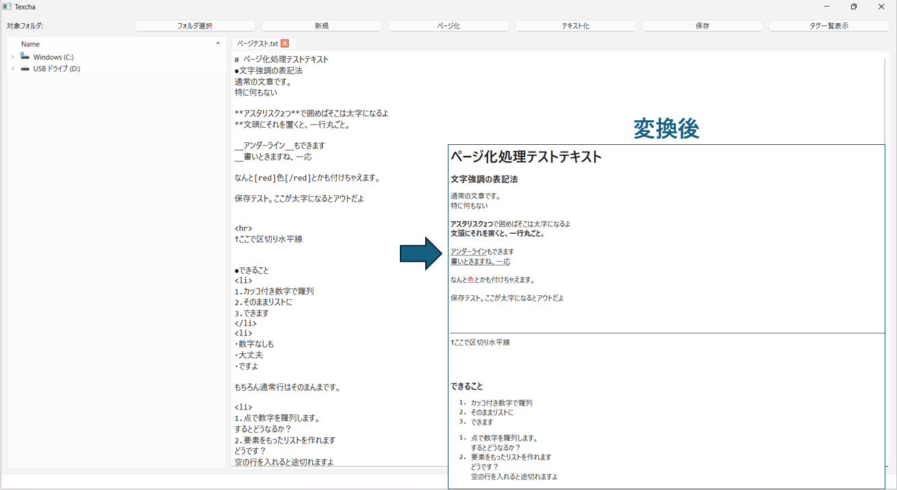
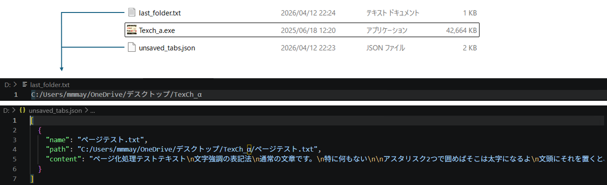
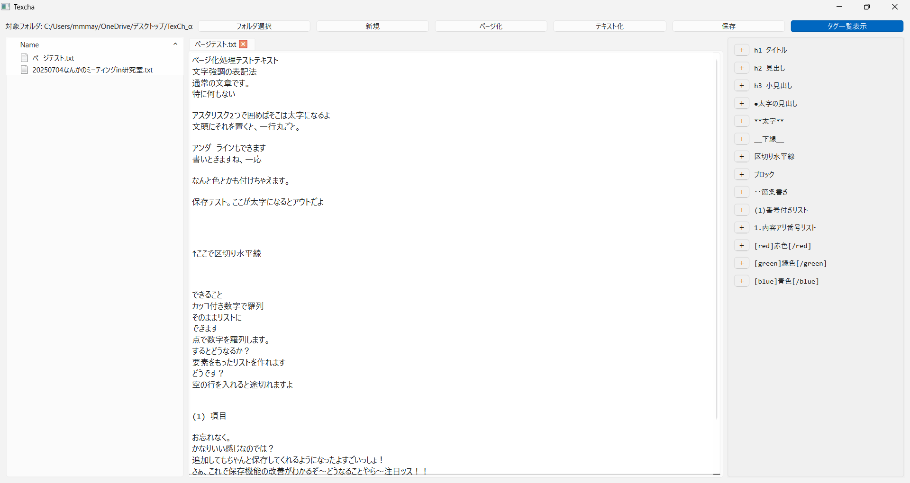

TexCha（テキスト装飾GUIツール）
独自の軽量マークアップと、AIを活用した「バイブコーディング」による高速プロトタイピング

開発の背景と目的
授業のノートや個人メモをテキストファイル（.txt）で管理する中で、「Markdownほど記述ルールを複雑にせず、プレーンテキストのままの見やすさを保ちつつ、必要に応じて文字サイズや色などの装飾を施したい」という欲求から生まれたアプリケーションです。
文頭やブロックに独自のシンプルな記号（「●」や「[red]」など）を追加するだけで、ボタン一つでHTMLのタグ相当に変換し、可読性の高いWebページのような表示（ページビュー）へ切り替えられる機能を持っています。
技術的な工夫と実装ポイント
1. 正規表現による独自パーサーの実装（page_formatter.py）
既存のMarkdownライブラリを使用せず、独自の記号ルールを解釈してHTML文字列を生成するパース処理を実装しました。
# リストブロックの解析処理の一部抜粋
elif re.match(r'^\d+\.', stripped):
is_ordered = True
if list_element:
# 既にリストが始まっている場合
item = re.sub(r'^\d+\.\s*', '', stripped)
list_items.append(f"</li><li>{item}")
else:
# リストの開始
item = re.sub(r'^\d+\.\s*', '', stripped)
list_element = True
list_items.append(f"<li>{item}")正規表現を用いた文字列置換だけでなく、連続した番号リスト（1. 2.）を検知して<ol>タグで囲むなど、前後の文脈（状態）を保持しながら解析を行うアルゴリズムを構築しています。
2. データ構造に応じた状態保存（TXTとJSONの使い分け）
メモ帳としての実用性を高めるため、アプリ終了時の状態（対象フォルダのパス、開いていたタブや未保存のテキスト）を保存し、次回起動時に自動で復元する機能を実装しました。
この状態保存の実装にあたり、保存するデータの性質（複雑さ）に応じて2つのフォーマットを使い分けています。
- フォルダパス（単一の文字列）：
単一の文字列のみのため、最もシンプルで軽量なプレーンテキスト（last_folder.txt）として保存。 - 未保存のタブ情報（構造化データ）：
「タブ名・ファイルパス・本文」という複数の属性を紐付けてリスト化して扱う必要があるため、closeEventを利用して辞書型をJSONフォーマット（unsaved_tabs.json）へシリアライズして保存。
また、この状態保存機能を実装したことで「未保存の新規メモ」をタブとして保持できるようになり、当初から目標としていた「Windows標準のメモ帳アプリの機能拡張版」に欠かせない要件を満たすことができました。

3. ユーザビリティを向上させるUI連携（PySide6）
画面左部にファイルシステムと連動した「フォルダツリー」を配置し、アプリ内でシームレスにファイル移動ができるように設計しました。また、独自の装飾記号を覚える手間を省くため、画面右部に「タグ一覧とワンクリック挿入ボタン」を配置し、メモ帳のようなシンプルなUIを維持しながらも高い利便性を持たせています。

「AI駆動開発」の実践と学び
対話型AIを活用した「バイブコーディング」の経験
本プロジェクトの最大の裏テーマは、初めて対話型AIをコーディングアシスタントとして本格的に活用することでした。
作りたいアプリの全体像や仕様、使用ライブラリの選定から環境整備までをAIに相談しながら進めました。この手法により、完全に未知であったGUIライブラリ（PySide6）であっても、約1週間という短期間でコア機能を完成させることができました。
AIとの協業で見えた課題と「PM」的な視点
完全自力での実装に比べて圧倒的に効率的である反面、特有の難しさにも直面しました。
- ゴールからの逆算: コードの生成を依頼する前に、完成形から逆算した「アルゴリズムの指示」を出さなければ、意図した動作にならないこと。
- 文脈の補完: 変数名のズレや他ファイルとの連携における情報の欠落など、AIが生成したコードをそのまま信じず、自分で読解・修正するスキルが不可欠であること。
- GUI実装の難しさ: 見た目や配置（レイアウト）といった視覚的な情報を、言語化してAIに正確に伝える難易度の高さ。
これらの苦労を通じて、AIへの指示出しは「相手（AI）の特性と限界を把握し、要件を的確に言語化して伝える」というプロセスにおいて、人間（プログラマやデザイナー）に対するマネジメント業務と非常に似ているように思えました。